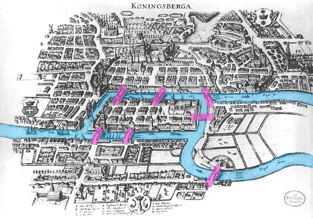
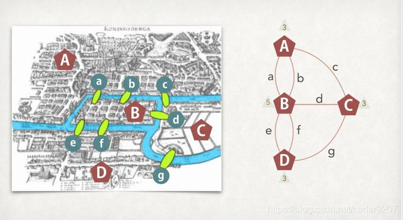

The Mathematics of Eulerian Walks
An Eulerian graph contains an Eulerian circuit—a closed trail that visits every edge of the graph exactly once. Established by Leonhard Euler in 1736, this solved the historic Seven Bridges of Königsberg puzzle and founded graph theory.
Formal Mathematical Framework & Theorems
Graph G = (V, E) & Vertex Degree
Let G = (V, E) be a finite undirected graph with vertex set V and edge set E.
Eulerian Trail, Circuit & Graph
An Eulerian Trail visits every edge in E exactly once. An Eulerian Circuit is a closed Eulerian trail. An Eulerian Graph is a graph containing an Eulerian circuit.
Euler's Circuit Theorem
A connected graph G has an Eulerian circuit if and only if every vertex in V has an even degree.
Eulerian Path Theorem
A connected graph G has an Eulerian path if and only if exactly 0 or 2 vertices have an odd degree.
The Seven Bridges of Königsberg & The Stucked Walker Simulator
The city of Königsberg was divided by the winding Pregel River into two mainland banks (North: Altstadt-Löbenicht, South: Vorstadt-Haberberg) and two central islands: Kneiphof Island and Lomse Island, connected by exactly 7 bridges.
Citizens attempted to walk through the city crossing every bridge once without retracing. Leonhard Euler proved this was mathematically impossible. When you run the simulation below in the sandbox, watch how the walker gets stuck!
Every landmass has odd degrees (North Bank: 3, South Bank: 3, Kneiphof: 5, Lomse: 3). Because there are 4 odd vertices (greater than 2), no Eulerian path or circuit exists!

Historical city map with highlighted river & 7 bridges

Eulerian Graph Formulation: 4 Vertices (A–D), 7 Edges (a–g)
Interactive Graph Workspace & Traversal Simulator
Click canvas to add Vertex. Drag between Vertices to link Edge. Use Delete Mode to remove individual elements.
Rigorous Analysis Report
Draw a graph or load a preset, then click "Analyze Graph" or "Play Traversal" to simulate walker.